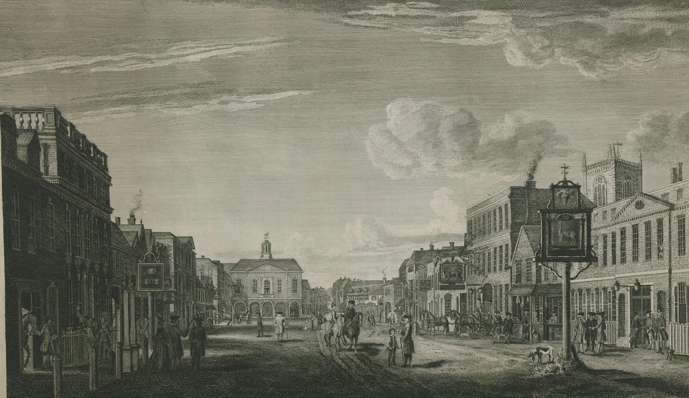

High Wycombe · Buckinghamshire
Come and talk
about Islam.
You’ll find us in the town centre most weekends, with free Qur’ans and time for anyone who wants to ask a question.

Visit the stall
High Wycombe town centre
Saturdays & Sundays
From Dhuhr (midday prayer), depending on setup.
Volunteering
Joining us at
the stall
Start with the policy and the WISE course. Then come and shadow a senior brother.
Donations
Help keep the stall going.
Your donations help cover the Qur’ans and printed guides we give out in town. If you’d like to donate in person, just speak to one of the volunteers at the stall.
Donate monthly online Printable donation QR sheet (PDF)
For bank transfer enquiries, WhatsApp the team on +20 127 202 0069.